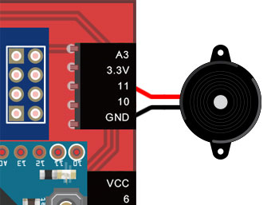
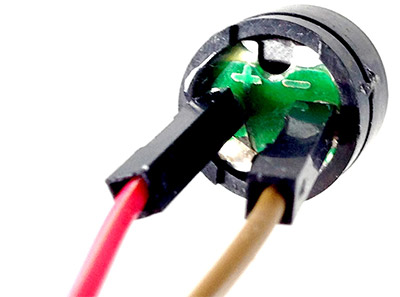
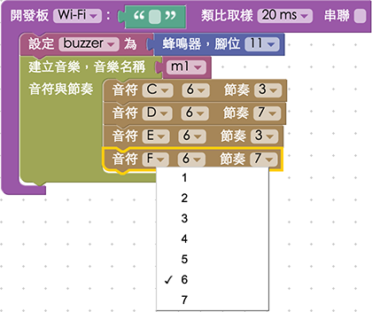
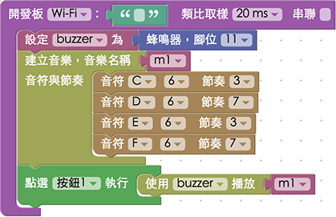
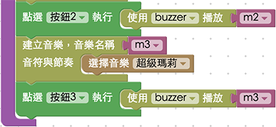

教學範例 13：蜂鳴器播放自製音樂
蜂鳴器是一個可以產生聲音信號的裝置，使用直流電供電，接通訊號源之後，音訊信號電流通過電磁線圈，使電磁線圈產生磁場，造成 振動膜片週期性地振動發聲，而 Webduino 更可以藉由 HTML5 Attribute 來填入音符代碼，每個代碼都會對應到一個數值，這個數值相對應蜂鳴器聲音的頻率，因此藉由純粹的 HTML5 或 javascript 就可以編輯音樂，透過蜂鳴器發聲。
範例影片展示
影片對應範例：https://blockly.webduino.io/?page=tutorials/buzzer-1
接線與實作
蜂鳴器在電路板的附近，有標示「+」和「-」的符號，「-」接在開發板的 GND，「+」接在 11 的腳位 ( 其實接反也沒關係 )，可以用杜邦線接出來，如果是馬克 1 號，也可以直接安插在上面。
馬克一號接線示意圖：

Fly 接線示意圖：

實際接線照片：


Webduino Blockly 操作解析
打開 Webduino Blockly 編輯工具 ( https://blockly.webduino.io )，因為這個範例會用網頁「網頁按鈕」來點選不同按鈕播放不同音樂，所以要先點選右上方「網頁互動測試」的按鈕，打開內嵌測試的網頁，用下拉選單選擇「按鈕行為」，這邊的按鈕跟實體的按鈕開關是不一樣的，這邊的按鈕指的是網頁上面的按鈕。

把開發板放到編輯畫面裡，填入對應的 Webduino 開發板名稱，開發板內放入蜂鳴器積木，名稱設定為 buzzer，腳位設定為 11。

再來建立我們的第一首音樂，放入「建立音樂」的積木，名稱命名為 m1，裏頭擺入音符與節奏，「音符」第一個下拉選單有「無聲、C、CS、D、DS、E、F、FS、G、GS、A、AS、B」，可以想像成鋼琴的黑鍵與白鍵，有 S 的就是黑鍵，第二個下拉選單就是有幾個八度音，這裏可以設定七個八度音，數字越大聲越高，「節奏」就是幾分之一秒，最少可以到 1/10 秒。

建立了音樂，接著就設定按下按鈕 1 的事件，當按下按鈕 1，就用 buzzer 播放 m1。

除了一個個放入音符和節奏外，也可以直接用輸入的方式，這裏就只是把剛剛的音符與節奏，合併成兩個欄位，如果節奏沒有按照音符數量填寫 ( 如果節奏比較少 )，則多出來的音符就會用最後一個節奏的時間去播放，用這種方式做的第二首音樂 m2，點選按鈕 2 來播放。

接著按下按鈕 3 的事件，這裏就用同樣做音樂的方法作首 m3 的音樂，內容就直接選一首資料庫的音樂放入。

按鈕 4 綁定停止播放的行為。

到這邊大致上已經完成了一個點選按鈕控制播放的蜂鳴器程式積木，但最後一步我們要在按鈕 1 到 3 多加一段停止播放的行為，避免按下按鈕的時候，如果前一首還沒播完，就會重疊在一起播放。

完成後，確認開發板上線 ( 點選「檢查連線狀態」查詢 )，點選紅色的執行按鈕，分別按下不同按鈕，就會聽到蜂鳴器播放出不同的音樂。( 解答：https://blockly.webduino.io/#-KDEaW-S-kRRaEkkyRGH )
程式碼解析 ( 完整程式碼、檢查連線狀態 )
HTML 的 header 引入 webduino-all.min.js，目的在讓瀏覽器可以支援 WebComponents 以及 Webduino 所有的元件，如果是用 Blockly 編輯工具產生的程式碼，則要額外引入 webduino-blockly.js。
<script src="https://webduino.io/components/webduino-js/dist/webduino-all.min.js"></script>
<script src="https://webduinoio.github.io/webduino-blockly/webduino-blockly.js"></script>
HTML 裡有五個按鈕，分別有各自的 id，屆時就可以由 id 來判斷按下哪顆按鈕。
<button id="demo-area-05-btn1" class="db5">按鈕 1</button>
<button id="demo-area-05-btn2" class="db5">按鈕 2</button>
<button id="demo-area-05-btn3" class="db5">按鈕 3</button>
<button id="demo-area-05-btn4" class="db5">按鈕 4</button>
<button id="demo-area-05-btn5" class="db5">按鈕 5</button>
JavaScript 看起來很多，但實際上很單純，先看到 m1 這首歌，其實就是建立兩個陣列 ( notes 和 tempos )，然後把音符和節奏分別拋到這兩個陣列裡，一開始的程式就是音樂播放的主程式，可以清楚地看到裡面放入了兩個物件，分別是 notes 和 tempos，而這兩個物件內容都是陣列。
var buzzer;
var m1;
var m2;
var m3;
function buzzer_music(m) {
var musicNotes = {};
musicNotes.notes = [];
musicNotes.tempos = [];
if(m.length>1){
for(var i=0; i<m.length; i++){
if(Array.isArray(m[i].notes)){
var cn = musicNotes.notes.concat(m[i].notes);
musicNotes.notes = cn;
}else{
musicNotes.notes.push(m[i].notes);
}
if(Array.isArray(m[i].tempos)){
var ct = musicNotes.tempos.concat(m[i].tempos);
musicNotes.tempos = ct;
}else{
musicNotes.tempos.push(m[i].tempos);
}
}
}else{
musicNotes.notes = [m[0].notes];
musicNotes.tempos = [m[0].tempos];
}
return musicNotes;
}
接著看到開發板的程式，可以看到我們建立的音樂，就是把一串陣列丟給這首音樂的 notes 和 tempos 物件，如此一來蜂鳴器就會按照這些音符節奏播放。
boardReady('', function (board) {
board.samplingInterval = 20;
buzzer = getBuzzer(board, 11);
m1 = buzzer_music([ {notes:"C6",tempos:"3"},{notes:"D6",tempos:"7"},{notes:"E6",tempos:"3"},{notes:"F6",tempos:"7"}]);
document.getElementById("demo-area-05-btn1").addEventListener("click",function(){
buzzer.stop();
buzzer.play(m1.notes, m1.tempos);
});
m2 = buzzer_music([ {notes : ["C6","D6","E6","F6","G6","A6","B6"] , tempos : ["8","8","8","8","8","8","8"] }]);
document.getElementById("demo-area-05-btn2").addEventListener("click",function(){
buzzer.stop();
buzzer.play(m2.notes, m2.tempos);
});
m3 = buzzer_music([ {notes:["E7","E7","0","E7","0","C7","E7","0","G7","0","0","0","G6","0","0","0","C7","0","0","G6","0","0","E6","0","0","A6","0","B6","0","AS6","A6","0","G6","E7","0","G7","A7","0","F7","G7","0","E7","0","C7","D7","B6","0","0","C7","0","0","G6","0","0","E6","0","0","A6","0","B6","0","AS6","A6","0","G6","E7","0","G7","A7","0","F7","G7","0","E7","0","C7","D7","B6","0","0"] , tempos:["8", "8", "8", "8", "8", "8", "8", "8", "8", "8", "8", "8", "8", "8", "8", "8", "8", "8", "8", "8", "8", "8", "8", "8", "8", "8", "8", "8", "8", "8", "8", "8", "8", "8", "8", "8", "8", "8", "8", "8", "8", "8", "8", "8", "8", "8", "8", "8", "8", "8", "8", "8", "8", "8", "8", "8", "8", "8", "8", "8", "8", "8", "8", "8", "8", "8", "8", "8", "8", "8", "8", "8", "8", "8", "8", "8", "8", "8", "8", "8"]}]);
document.getElementById("demo-area-05-btn3").addEventListener("click",function(){
buzzer.stop();
buzzer.play(m3.notes, m3.tempos);
});
document.getElementById("demo-area-05-btn4").addEventListener("click",function(){
buzzer.stop();
});
});
以上就是利用蜂鳴器和網頁的按鈕，來製作與播放音樂。
完整程式碼：https://bin.webduino.io/lihov/edit?html,css,js,output
解答：https://blockly.webduino.io/#-KDEaW-S-kRRaEkkyRGH
蜂鳴器的延伸教學：
Webduino Blockly 課程 9-2：蜂鳴器播放音樂
Webduino Blockly 課程 9-3：切換音樂，用蜂鳴器播放
Webduino Blockly 課程 9-4：蜂鳴器的播放、暫停、停止 ( 按鈕開關控制 )
如果您還想了解更多，可以參考：
2. Blockly 教學：https://goo.gl/h6s7GY
3. 產品總覽：https://webduino.io/buy.html
4. 露天賣場：http://goo.gl/0Dj9ip